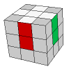
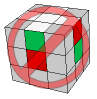
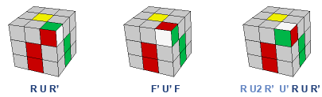
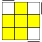
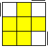
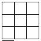
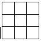
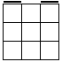

RUBIK'S CUBE SOLUTION: PRINTABLE CHEAT SHEET
|
STEP 1: CROSS  |
STEP 2: BOTTOM LAYER CORNERS Every algorithm moves a corner from top to bottom right below without disrupting the cross.  |
STEP 3: MIDDLE LAYER EDGES First algorithm inserts the edge from top to the middle in the front. |
STEP 4: EDGE ORIENTATION If no edges are yellow on top, apply first algorithm and then the second.
|
STEP 5: CORNER ORIENTATION
Algorithm: R U R' U R U2 R'
| If ONE corner yellow: move it to the bottom left, then apply the algorithm. | if TWO corners are yellow: rotate top layer until a yellow sticker is on the bottom left, facing front. Then apply the algorithm. |
if ZERO corners are yellow: rotate top layer until a yellow sticker is on the bottom left, facing left. The apply the algorithm. |
|  OR  |  view from top |
 view from top |
|
STEP 6: CORNER PERMUTATION Roatate top layer until headlights are in the back. If you don't have headlights, first apply the algorithm to get them. R' F R' B2 R F' R' B2 R2 |
STEP 7: EDGE PERMUTATION Roatate top layer until the solved edge is in the back. If you don't have a solved edge, first apply the algorithm to get one. (R U') (R U) (R U) (R U') R' U' R2 |